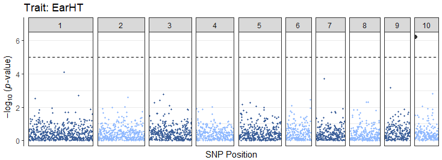
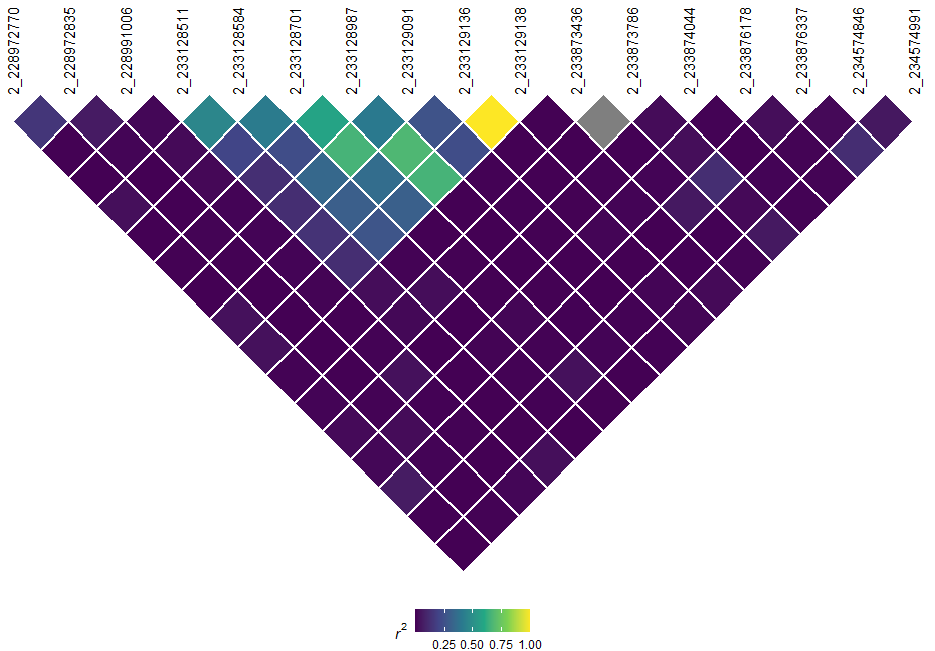
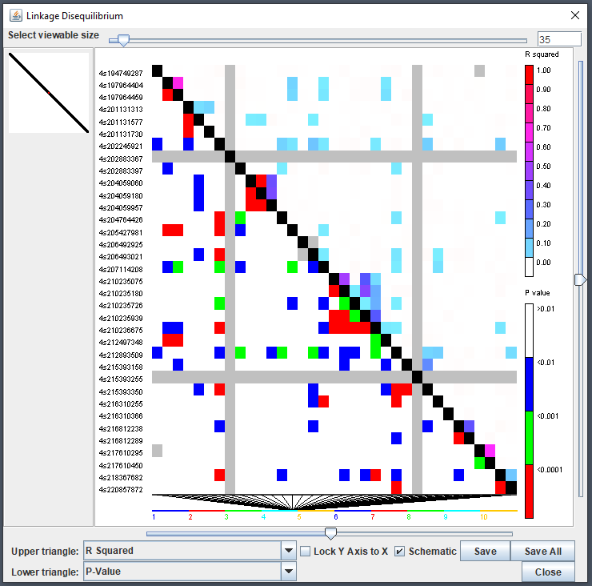
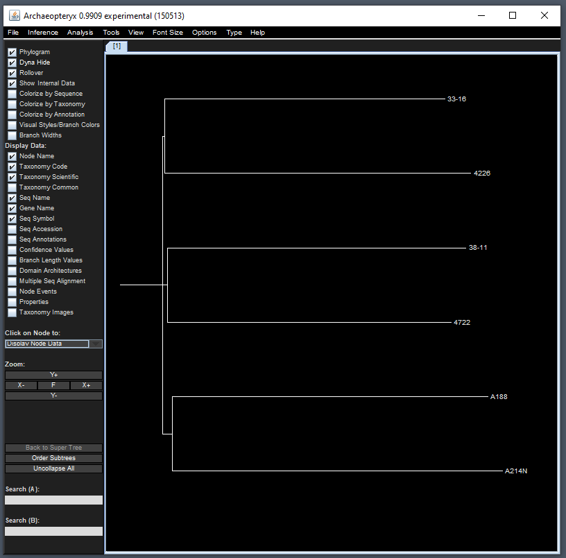

Getting Started with rTASSEL
Brandon Monier
2023-07-09
Source:vignettes/rtassel_walkthrough.Rmd
rtassel_walkthrough.RmdIntroduction
Overview
Thanks for checking out rTASSEL! In this document, we will go over the functionalities used to work with the TASSEL software via R.
TASSEL is a software package used to evaluate traits associations, evolutionary patterns, and linkage disequilibrium. Strengths of this software include:
The opportunity for a number of new and powerful statistical approaches to association mapping such as a General Linear Model (GLM) and Mixed Linear Model (MLM). MLM is an implementation of the technique which our lab’s published Nature Genetics paper - Unified Mixed-Model Method for Association Mapping - which reduces Type I error in association mapping with complex pedigrees, families, founding effects and population structure.
An ability to handle a wide range of indels (insertion & deletions). Most software ignore this type of polymorphism; however, in some species (like maize), this is the most common type of polymorphism.
More information can be found in the following paper:
Bradbury PJ, Zhang Z, Kroon DE, Casstevens TM, Ramdoss Y, Buckler ES. (2007) TASSEL: Software for association mapping of complex traits in diverse samples. Bioinformatics 23:2633-2635.
Detailed documentation and source code can be found on our website:
Motivation
The main goal of developing this package is to construct an R-based front-end to connect to a variety of highly used TASSEL methods and analytical tools. By using R as a front-end, we aim to utilize a unified scripting workflow that exploits the analytical prowess of TASSEL in conjunction with R’s popular data handling and parsing capabilities without ever having the user to switch between these two environments.
Disclaimer
Due to the experimental nature of this package’s lifecycle, end functionalities are prone to change after end-user input is obtained in the near future.
Citation
To cite rTASSEL, please use the following citation:
Monier et al., (2022). rTASSEL: An R interface to TASSEL for analyzing genomic diversity. Journal of Open Source Software, 7(76), 4530, https://doi.org/10.21105/joss.04530
Preliminary steps
Setting Memory
Since genome-wide association analyses can use up a lot of
computational resources, memory allocation to rTASSEL can
be modified. To change the amount of memory, use the base
options() function and modify the following parameter:
Replace <memory> with a specified unit of memory.
For example, if I want to allocate a maximum of 6 GB of memory for my
operations, I would use the input "-Xmx6g", where
g stands for gigabyte (GB). More information about memory
allocation can be found here.
NOTE: Setting Java memory options for
rTASSEL and any rJava-related packages
needs to be set before loading the
rTASSEL package!
The importance of logging your progress
Before we begin analyzing data, optional parameters can be set up to
make rTASSEL more efficient. To prevent your R console from
being overloaded with TASSEL logging information, it is highly
recommended that you start a logging file. This file will house
all of TASSEL’s logging output which is beneficial for debugging and
tracking the progress of your analytical workflow. To start a logging
file, use the following command:
rTASSEL::startLogger(fullPath = NULL, fileName = NULL)If the rTASSEL::startLogger() parameters are set to
NULL, the logging file will be created in your current
working directory. If you are unsure of what your working directory is
in R, use the base getwd() command.
Additionally, since this is a general walkthrough, certain intricaces
of each function may glossed over. If you would like to study a function
in full, refer to the R documentation by using
?<function> in the console, where
<function> is an rTASSEL-based
function.
Reading Data
Overview
Like TASSEL, rTASSEL will read two main types of
data:
- Genotype data
- Phenotype data
This data can be read in several different ways. In the following
examples, we will demonstrate various ways genotype and phenotype
information can be loaded into rTASSEL objects.
Loading genotype data
From a path
Currently, reading in genotype data to rTASSEL is based
off of file locations as paths. Genotype/sequencing data can be stored
in a variety of formats. rTASSEL can read and store a wide
variety of file types:
- hapmap (HMP)
- HDF5 (hierarchical data format version 5)
- VCF (variant call format)
- Plink
To load this genotype data, simply store your file location as a
string object in R. For this example, we will load two toy data sets -
one being a VCF file and the other being a hapmap file. These data sets
can be accessed via the rTASSEL package itself:
# Load hapmap data
genoPathHMP <- system.file(
"extdata",
"mdp_genotype.hmp.txt",
package = "rTASSEL"
)
genoPathHMP## [1] "/home/runner/work/_temp/Library/rTASSEL/extdata/mdp_genotype.hmp.txt"
# Load VCF data
genoPathVCF <- system.file(
"extdata",
"maize_chr9_10thin40000.recode.vcf",
package = "rTASSEL"
)
genoPathVCF## [1] "/home/runner/work/_temp/Library/rTASSEL/extdata/maize_chr9_10thin40000.recode.vcf"Now that we have the file paths to this data, we can pass this to
TASSEL and create a formal TasselGenotypePhenotype class
object in R using the following:
# Load in hapmap file
tasGenoHMP <- rTASSEL::readGenotypeTableFromPath(
path = genoPathHMP
)
# Load in VCF file
tasGenoVCF <- rTASSEL::readGenotypeTableFromPath(
path = genoPathVCF
)When we call these objects, a summary of the data will be posted to the R console:
tasGenoHMP## A TasselGenotypePhenotype Dataset
## Class.............. TasselGenotypePhenotype
## Taxa............... 281
## Positions.......... 3093
## Taxa x Positions... 869133
## ---
## Genotype Table..... [x]
## Phenotype Table.... [ ]This summary details the number of Taxa (Taxa) and
marker positions (Positions) within the data set.
Additionally, since we can load both genotype and phenotype information
into this object, a helpful check will be displayed to show what is
populating the object ([x] or [ ]).
Additional information about TasselPhenotypeGenotype data sets
In general, this S4 class data object houses “slot” information relating to TASSEL/Java pointers of the respective data.
class(tasGenoHMP)## [1] "TasselGenotypePhenotype"
## attr(,"package")
## [1] "rTASSEL"
slotNames(tasGenoHMP)## [1] "name" "jTasselObj" "jTaxaList" "jPositionList"
## [5] "jGenotypeTable" "jPhenotypeTable"Technically, this object does not contain the full information of the
data represented in R space, but merely contains addresses to the memory
store of the reference TASSEL object ID. For example, if we wanted to
extract the GenotypeTable with the S4 @
operator, we would get something that looks like this:
tasGenoHMP@jGenotypeTable## [1] "Java-Object{net.maizegenetics.dna.snp.CoreGenotypeTable@323b36e0}"This entity is a rJava internal identifier. It isn’t
until we call downstream rTASSEL functions where we will
bring the TASSEL data into the R environment.
Loading phenotype data
From a path
Similar to reading in genotype data, phenotype data can also be read in via paths. If you already have preconstructed phenotype data in a file, this option will most likely work best for you. One caveat to this is how the data file is constructed in terms of columns and trait data for TASSEL analyses. More information about how these files can be found at this link under the Numerical Data section.
Loading this type of data is very similar to how genotype data is
loaded. here, we will use the
rTASSEL::readPhenotypeFromPath() function:
# Read from phenotype path
phenoPath <- system.file("extdata", "mdp_traits.txt", package = "rTASSEL")
phenoPath## [1] "/home/runner/work/_temp/Library/rTASSEL/extdata/mdp_traits.txt"
# Load into rTASSEL `TasselGenotypePhenotype` object
tasPheno <- rTASSEL::readPhenotypeFromPath(
path = phenoPath
)
# Inspect object
tasPheno## A TasselGenotypePhenotype Dataset
## Class.............. TasselGenotypePhenotype
## Taxa............... 301
## Positions.......... NA
## Taxa x Positions... NA
## ---
## Genotype Table..... [ ]
## Phenotype Table.... [x]
## ---
## Traits: Taxa EarHT dpoll EarDiaThe object output is very similar to the genotype table output with some minor additions to which traits are displayed in the file.
From an R data frame
In some cases you might want to first modify your phenotype data set
in R and then load it into the TASSEL environment. If you wish to choose
this route, you will need to use the
rTASSEL::readPhenotypeFromDataFrame() function along with a
couple of parameters. First, we will construct an R data frame and load
it with this function:
# Create phenotype data frame
phenoDF <- read.table(phenoPath, header = TRUE)
colnames(phenoDF)[1] <- "Taxon"
# Inspect first few rows
head(phenoDF)## Taxon EarHT dpoll EarDia
## 1 811 59.50 -999.0 -999.00000
## 2 33-16 64.75 64.5 -999.00000
## 3 38-11 92.25 68.5 37.89700
## 4 4226 65.50 59.5 32.21933
## 5 4722 81.13 71.5 32.42100
## 6 A188 27.50 62.0 31.41900
# Load into rTASSEL `TasselGenotypePhenotype` object
tasPhenoDF <- rTASSEL::readPhenotypeFromDataFrame(
phenotypeDF = phenoDF,
taxaID = "Taxon",
attributeTypes = NULL
)
# Inspect new object
tasPhenoDF## A TasselGenotypePhenotype Dataset
## Class.............. TasselGenotypePhenotype
## Taxa............... 301
## Positions.......... NA
## Taxa x Positions... NA
## ---
## Genotype Table..... [ ]
## Phenotype Table.... [x]
## ---
## Traits: Taxa EarHT dpoll EarDiaThe phenotypeDF parameter is for the R data frame
object. The taxaID parameter is needed to determine which
column of your data frame is your TASSEL taxa data. The final parameter
(attributeTypes) is optional. If this parameter is set to
NULL, all remaining data frame columns will be classified
as TASSEL data types. If this is not the case for your data
(e.g. if you have covariate or factor data in your experiment),
you will need to specify which columns are what TASSEL data
type (i.e. data, covariate, or
factor). This will have to be passed as an R vector of
string elements (e.g. c("data", "factor", "covariate")).
Currently, this data type needs to be entered in the same order
as they are found in the data frame.
Loading genotype and phenotype data simultaneously
In association studies, we are interested in combining our genotype
and phenotype data. To usually run this operation in TASSEL, an
intersect combination between the two data sets is needed. To run this
in rTASSEL, we can use the
rTASSEL::readGenotypePhenotype() function. The parameter
input needed for this function is, of course, a genotype and phenotype
object. For genotype input, the following can be used:
- a path to a genotype file
- a prior
TasselGenotypePhenotypeobject
For phenotype input, the following can be used:
- a path to a phenotype data set,
- a prior
TasselGenotypePhenotypeobject - an R data frame
For example, if we wanted to read the prior
TasselGenotypePhenotype genotype and phenotype objects from
earlier:
tasGenoPheno <- rTASSEL::readGenotypePhenotype(
genoPathOrObj = tasGenoHMP,
phenoPathDFOrObj = tasPheno
)
tasGenoPheno## A TasselGenotypePhenotype Dataset
## Class.............. TasselGenotypePhenotype
## Taxa............... 279
## Positions.......... 3093
## Taxa x Positions... 862947
## ---
## Genotype Table..... [x]
## Phenotype Table.... [x]
## ---
## Traits: Taxa EarHT dpoll EarDiaWe can also use a combination of the above parameter options
(e.g. load a genotype path and a phenotype data frame, etc.). One caveat
though, if you load in a phenotype data frame object with this
function, the prior parameters from the
rTASSEL::readPhenotypeFromDataFrame will be
needed (i.e. the taxaID and
attributeTypes parameters):
tasGenoPhenoDF <- rTASSEL::readGenotypePhenotype(
genoPathOrObj = genoPathHMP,
phenoPathDFOrObj = phenoDF,
taxaID = "Taxon",
attributeTypes = NULL
)
tasGenoPhenoDF## A TasselGenotypePhenotype Dataset
## Class.............. TasselGenotypePhenotype
## Taxa............... 279
## Positions.......... 3093
## Taxa x Positions... 862947
## ---
## Genotype Table..... [x]
## Phenotype Table.... [x]
## ---
## Traits: Taxa EarHT dpoll EarDiaReading kinship data
rTASSEL also provides users the ability to read in delimited
“flat-file” kinship objects as a TasselDistanceMatrix
object using the function, readTasselDistanceMatrix():
## Get toy kinship data from package ----
kinshipPath <- system.file(
"extdata",
"mdp_kinship.txt",
package = "rTASSEL"
)
## Read ----
rTASSEL::readTasselDistanceMatrix(kinshipPath)## A TasselDistanceMatrix Object of 277 x 277 elements:
##
## 33-16 38-11 4226 4722 ... YU796NS
## 33-16 2.0000 0.1816 0.0187 0.0000 ... 0.1162
## 38-11 0.1816 2.0000 0.0000 0.1120 ... 0.1421
## 4226 0.0187 0.0000 2.0000 0.0000 ... 0.1904
## 4722 0.0000 0.1120 0.0000 2.0000 ... 0.0000
## ... ... ... ... ... ... ...
## YU796NS 0.1162 0.1421 0.1904 0.0000 ... 2.0000Extracting data from rTASSEL objects
Get genotype data
If you want to bring in genotype data into the R environment, you can
use the rTASSEL::getSumExpFromGenotypeTable() function. All
this function needs is a TasselGenotypePhenotype class
object containing a genotype table:
tasSumExp <- rTASSEL::getSumExpFromGenotypeTable(
tasObj = tasGenoPheno
)
tasSumExp## class: RangedSummarizedExperiment
## dim: 3093 279
## metadata(0):
## assays(1): ''
## rownames: NULL
## rowData names(3): tasselIndex refAllele altAllele
## colnames: NULL
## colData names(2): Sample TasselIndexAs you can see above, the gentoype object is returned as a
SummarizedExperiment class R object. More information about
these objects can be found here.
From this object, we extract taxa information and their respective TASSEL integer locations:
SummarizedExperiment::colData(tasSumExp)## DataFrame with 279 rows and 2 columns
## Sample TasselIndex
## <character> <integer>
## 1 33-16 0
## 2 38-11 1
## 3 4226 2
## 4 4722 3
## 5 A188 4
## ... ... ...
## 275 W22 274
## 276 W64A 275
## 277 WD 276
## 278 WF9 277
## 279 YU796NS 278We can also extract the allelic marker data using
SummarizedExperiment::rowData():
SummarizedExperiment::rowData(tasSumExp)## DataFrame with 3093 rows and 3 columns
## tasselIndex refAllele altAllele
## <integer> <character> <character>
## 1 0 A C
## 2 1 C G
## 3 2 G T
## 4 3 A T
## 5 4 A G
## ... ... ... ...
## 3089 3088 A G
## 3090 3089 C G
## 3091 3090 C G
## 3092 3091 A G
## 3093 3092 C GAnd get marker coordinates using
SummarizedExperiment::rowRanges()
SummarizedExperiment::rowRanges(tasSumExp)## GRanges object with 3093 ranges and 3 metadata columns:
## seqnames ranges strand | tasselIndex refAllele altAllele
## <Rle> <IRanges> <Rle> | <integer> <character> <character>
## [1] 1 157104 + | 0 A C
## [2] 1 1947984 + | 1 C G
## [3] 1 2914066 + | 2 G T
## [4] 1 2914171 + | 3 A T
## [5] 1 2915078 + | 4 A G
## ... ... ... ... . ... ... ...
## [3089] 10 147819958 + | 3088 A G
## [3090] 10 148332885 + | 3089 C G
## [3091] 10 148488692 + | 3090 C G
## [3092] 10 148816538 + | 3091 A G
## [3093] 10 148907116 + | 3092 C G
## -------
## seqinfo: 10 sequences from an unspecified genome; no seqlengthsExtract phenotype data
If you want to bring in phenotype data into the R environment, you
can use the rTASSEL::getPhenotypeDF() function. All this
function needs is a TasselGenotypePhenotype class object
containing a phenotype table:
tasExportPhenoDF <- rTASSEL::getPhenotypeDF(
tasObj = tasGenoPheno
)
head(tasExportPhenoDF)## Taxa EarHT dpoll EarDia
## 1 33-16 64.75 64.5 NaN
## 2 38-11 92.25 68.5 37.89700
## 3 4226 65.50 59.5 32.21933
## 4 4722 81.13 71.5 32.42100
## 5 A188 27.50 62.0 31.41900
## 6 A214N 65.00 69.0 32.00600As shown above, an R tibble-based data frame is exported
with converted data types translated from TASSEL. See the following
table what TASSEL data types are tranlated into within the R
environment:
| TASSEL Data | Converted R Data type |
|---|---|
| taxa | character |
| data | numeric |
| covariate | numeric |
| factor | factor |
Filtering genotype data
NOTE: This is just a “snapshot” of how we can filter genotype information in rTASSEL. For more information, please see the additional vignette, “Filtering Genotype Tables”.
Prior to association analyses, filtration of genotype data may be necessary. In TASSEL, this accomplished through the Filter menu using two primary plugins:
- Filter Site Builder plugin
- Filter Taxa Builder plugin
In rTASSEL, this can also be accomplished using the
follwing functions:
These objects take a TasselGenotypePhenotype class
object. For example, in our genotype data set, if we want to remove
monomorphic and low coverage sites, we could use the following
parameters in rTASSEL::filterGenotypeTableSites():
tasGenoPhenoFilt <- rTASSEL::filterGenotypeTableSites(
tasObj = tasGenoPheno,
siteMinCount = 150,
siteMinAlleleFreq = 0.05,
siteMaxAlleleFreq = 1.0,
siteRangeFilterType = "none"
)
tasGenoPhenoFilt## A TasselGenotypePhenotype Dataset
## Class.............. TasselGenotypePhenotype
## Taxa............... 279
## Positions.......... 2555
## Taxa x Positions... 712845
## ---
## Genotype Table..... [x]
## Phenotype Table.... [x]
## ---
## Traits: Taxa EarHT dpoll EarDiaWe can then compare this to our original pre-filtered data set:
tasGenoPheno## A TasselGenotypePhenotype Dataset
## Class.............. TasselGenotypePhenotype
## Taxa............... 279
## Positions.......... 3093
## Taxa x Positions... 862947
## ---
## Genotype Table..... [x]
## Phenotype Table.... [x]
## ---
## Traits: Taxa EarHT dpoll EarDiaThese functions can work on any TasselGenotypePhenotype
class object that contains genotypic data, regardless of single or
combined TASSEL objects.
Analysis - Relatedness
Create a kinship matrix object
In TASSEL, for mixed linear model analyses, a kinship matrix
calculated from genotype data is necessary. This can be accomplished by
calculating a kinship TASSEL object using the function
kinshipMatrix(). The main parameter input is a
TasselGenotypePhenotype class object that contains a
genotype data set:
tasKin <- rTASSEL::kinshipMatrix(tasObj = tasGenoPheno)This function allows for several types of algorithm to used using the
method parameter. More info about these methods can be
found here.
Calculate a distance matrix
Very similar to kinship matrix calculation, a distance matrix can
also be calculated using genotype data using the function
distanceMatrix():
tasDist <- rTASSEL::distanceMatrix(tasObj = tasGenoPheno)
TasselDistanceMatrix objects
Overview
The prior two functions will generate a pairwise matrix (e.g. \(m \times m\) dimensions). The return object
is an rTASSEL class, TasselDistanceMatrix. When we inspect
the prior object we will see something like this:
tasKin## A TasselDistanceMatrix Object of 279 x 279 elements:
##
## 33-16 38-11 4226 4722 ... YU796NS
## 33-16 1.7970 0.0396 0.0606 -0.0087 ... -0.0010
## 38-11 0.0396 1.9102 0.0196 -0.0063 ... -0.0193
## 4226 0.0606 0.0196 1.9265 -0.0170 ... 0.1296
## 4722 -0.0087 -0.0063 -0.0170 1.4533 ... 0.0326
## ... ... ... ... ... ... ...
## YU796NS -0.0010 -0.0193 0.1296 0.0326 ... 1.8523This will showcase the first four rows and columns and the last row and column if the distance matrix exceeds 5 dimensions (which it probably will).
This object, similar to the TasselGenotypePhenotype
class, essentially holds pointers to the Java/TASSEL object in memory.
Despite this, we can still use some base R methods similar to how we
handle matrix objects:
## [1] "33-16" "38-11" "4226" "4722" "A188" "A214N"## [1] "33-16" "38-11" "4226" "4722" "A188" "A214N"## [1] 279 279## [1] 279## [1] 279Coercion
If we want to use additional R methods (e.g. plotting, new models,
etc.), we can coerce this object to a general R data object, in this
case, a matrix object using the base method
as.matrix():
library(magrittr)
tasKinR <- tasKin %>% as.matrix()
## Inspect first 5 rows and columns ----
tasKinR[1:5, 1:5]## 33-16 38-11 4226 4722 A188
## 33-16 1.796955100 0.039558496 0.06060008 -0.008674403 0.03524417
## 38-11 0.039558496 1.910150800 0.01960260 -0.006317467 -0.02937613
## 4226 0.060600080 0.019602600 1.92645620 -0.017025312 0.02449092
## 4722 -0.008674403 -0.006317467 -0.01702531 1.453315500 -0.02040120
## A188 0.035244170 -0.029376134 0.02449092 -0.020401197 2.00156020We can also coerce a pairwise matrix object to a
TasselDistanceMatrix object using rTASSEL’s function
asTasselDistanceMatrix():
library(magrittr)
## Create a dummy pairwise matrix object ----
set.seed(123)
m <- 10
s <- matrix(rnorm(100), m)
s[lower.tri(s)] <- t(s)[lower.tri(s)]
diag(s) <- 2
## Add sample IDs ----
colnames(s) <- rownames(s) <- paste0("s_", seq_len(m))
testTasselDist <- s %>% asTasselDistanceMatrix()
testTasselDist## A TasselDistanceMatrix Object of 10 x 10 elements:
##
## s_1 s_2 s_3 s_4 ... s_10
## s_1 2.0000 1.2241 -1.0678 0.4265 ... 0.9935
## s_2 1.2241 2.0000 -0.2180 -0.2951 ... 0.5484
## s_3 -1.0678 -0.2180 2.0000 0.8951 ... 0.2387
## s_4 0.4265 -0.2951 0.8951 2.0000 ... -0.6279
## ... ... ... ... ... ... ...
## s_10 0.9935 0.5484 0.2387 -0.6279 ... 2.0000PCA and MDS
rTASSEL can run principal component analysis (PCA) and
multidimensional scaling (MDS) on objects containing a
GenotypeTable and TasselDistanceMatrix
respectively. To run PCA, simply use the pca() function on
a TasselGenotypePhenotype object that contains a TASSEL
GenotypeTable
tasGenoHMP## A TasselGenotypePhenotype Dataset
## Class.............. TasselGenotypePhenotype
## Taxa............... 281
## Positions.......... 3093
## Taxa x Positions... 869133
## ---
## Genotype Table..... [x]
## Phenotype Table.... [ ]
pcaRes <- pca(tasGenoHMP)To run MDS, simply use the mds() function on a
TasselDistanceMatrix object:
tasDist## A TasselDistanceMatrix Object of 279 x 279 elements:
##
## 33-16 38-11 4226 4722 ... YU796NS
## 33-16 0.0000 0.2799 0.2794 0.2698 ... 0.2908
## 38-11 0.2799 0.0000 0.2920 0.2777 ... 0.3001
## 4226 0.2794 0.2920 0.0000 0.2863 ... 0.2795
## 4722 0.2698 0.2777 0.2863 0.0000 ... 0.2759
## ... ... ... ... ... ... ...
## YU796NS 0.2908 0.3001 0.2795 0.2759 ... 0.0000
mdsRes <- mds(tasDist)Both of these will return a DataFrame object that will
contain a Taxa ID column and the number of components or axes that were
specified in the function call. For example, let’s take a look at the
pcaRes object made previously:
str(pcaRes)## Formal class 'PCAResults' [package "rTASSEL"] with 2 slots
## ..@ results:List of 3
## .. ..$ PC_Datum :'data.frame': 281 obs. of 6 variables:
## .. .. ..$ Taxa: chr [1:281] "33-16" "38-11" "4226" "4722" ...
## .. .. ..$ PC1 : num [1:281] 0.916 -0.813 -0.299 1.321 0.41 ...
## .. .. ..$ PC2 : num [1:281] 2.48 2.47 3.16 2.93 2.56 ...
## .. .. ..$ PC3 : num [1:281] 0.491 -0.301 1.262 2.052 0.335 ...
## .. .. ..$ PC4 : num [1:281] -0.164 2.238 1.229 0.688 0.89 ...
## .. .. ..$ PC5 : num [1:281] 0.165 -0.41 -1.203 7.643 1.343 ...
## .. ..$ Eigenvalues_Datum :'data.frame': 281 obs. of 4 variables:
## .. .. ..$ PC : chr [1:281] "0" "1" "2" "3" ...
## .. .. ..$ eigenvalue : num [1:281] 26.05 14.88 9.66 8.09 7.76 ...
## .. .. ..$ proportion_of_total : num [1:281] 0.0596 0.034 0.0221 0.0185 0.0178 ...
## .. .. ..$ cumulative_proportion: num [1:281] 0.0596 0.0936 0.1157 0.1342 0.152 ...
## .. ..$ Eigenvectors_Datum:'data.frame': 3093 obs. of 6 variables:
## .. .. ..$ Trait : chr [1:3093] "PZB00859.1" "PZA01271.1" "PZA03613.2" "PZA03613.1" ...
## .. .. ..$ Eigenvector1: num [1:3093] 0.00176 0.02925 0.00274 0.03528 -0.00961 ...
## .. .. ..$ Eigenvector2: num [1:3093] -0.01553 0.02205 -0.03279 0.00612 0.04978 ...
## .. .. ..$ Eigenvector3: num [1:3093] 0.000913 0.013536 -0.001632 0.000795 -0.023482 ...
## .. .. ..$ Eigenvector4: num [1:3093] -0.019939 -0.006206 -0.011926 0.01891 0.000812 ...
## .. .. ..$ Eigenvector5: num [1:3093] -0.0401 -0.0387 0.014 -0.0407 0.031 ...
## ..@ jObj :Formal class 'jobjRef' [package "rJava"] with 2 slots
## .. .. ..@ jobj :<externalptr>
## .. .. ..@ jclass: chr "net/maizegenetics/phenotype/CorePhenotype"Analysis - Association
Overview
One of TASSEL’s most powerful functionalities is its capability of performing a variety of different association modeling techniques. If you have started reading the walkthrough here it is strongly suggested that you read the other components of this walkthrough since the following parameters require what we have previously created!
If you are not familar with these methods, more information about how these operate in base TASSEL can be found at following links:
The rTASSEL::assocModelFitter() function has several
primary components:
-
tasObj: aTasselGenotypePhenotypeclass R object -
formula: an R-based linear model formula -
fitMarkers: a boolean parameter to differentiate between BLUE and GLM analyses -
kinship: a TASSEL kinship object -
fastAssociation: a boolean parameter for data sets that have many traits
Probably the most important concept of this function is
formula parameter. If you are familar with standard R
linear model functions, this concept is fairly similar. In TASSEL, a
linear model is composed of the following scheme:
y ~ A…where y is any TASSEL data type and
A is any TASSEL covariate and / or
factor types:
<data> ~ <covariate> and/or <factor>This model can be written out in several ways. With an example phenotype data, we can have the following variables that are represented in TASSEL in the following way:
-
Taxon<taxa> -
EarHT<data> -
dpoll<data> -
EarDia<data> -
location<factor> -
Q1<covariate> -
Q2<covariate> -
Q3<covariate>
Using this data, we could write out the following formula in R
list(EarHT, dpoll, EarDia) ~ location + Q1 + Q2 + Q3In the above example, we use a base list() function to
indicate analysis on multiple numeric data types. For covariate and
factor information, we use + operator. One problem with
this implementation is that it can become cumbersome and prone to error
if we want to analyze the entirety of a large data set or all data
and/or factor and covariate types.
A work around for this problem is to utilize a special character to
indicate all elements within the model (.). By using the
. operator we can simplify the above model into the
following:
. ~ .This indicates we want to analyze the whole data set and leave nothing out. If we want to analyze all data types and only a handful of factor and/or covariates, we can use something like this:
. ~ location + Q1 + Q2Or vice-versa:
list(EarHT, dpoll) ~ .Take note we can be very specific with what we want to include in our
trait model! In the above example we have deliberately left out
EarDia from our model.
Additionally, we can also fit marker and kinship data to our model
which can change our analytical methods. Since these options in TASSEL
are binary, additional parameters are passed for this function. In this
case, genotype/marker data is fitted using the fitMarker
parameter and kinship is fitted using the kinship
parameter.
Fast Association implements methods described by Shabalin (2012). This method provides an ordinary least squares solution for fixed effect models. For this method to proper work it is necessary that your have:
- No missing data in your phenotype data set
- Phenotypes and genotypes have been merged using an intersect join. Since this is currently the only option of join genotype and phenotype data, you do not have to worry about this for now.
NOTE: since we are working with “toy” data, empirical insight will not be elucidated upon in the following steps. This is simply to show the user how properly use these functions and the outputs that they give.
In the following examples, we will run example data and in return,
obtain TASSEL association table reports in the form of an R
list object containing tibble-based R data
frames.
Calculate BLUEs
To caclulate best linear unbiased estimates (BLUEs), numeric
phenotype data can be used along with covariate and factor data
only if it is intended to control for field variation. Since
genotype data is not needed for this method, we can leave the
fitMarkers, kinship, and
fastAssociation to NULL or
FALSE:
# Read in phenotype data
phenoPathCov <- system.file("extdata", "mdp_phenotype.txt", package = "rTASSEL")
tasPhenoCov <- rTASSEL::readPhenotypeFromPath(phenoPathCov)
# Calculate BLUEs
tasBLUE <- rTASSEL::assocModelFitter(
tasObj = tasPhenoCov,
formula = . ~ ., # <- All data is used!
fitMarkers = FALSE,
kinship = NULL,
fastAssociation = FALSE
)## Running all traits...## Association Analysis : BLUEs
# Return BLUE output
str(tasBLUE)## Formal class 'AssociationResultsBLUE' [package "rTASSEL"] with 3 slots
## ..@ results :List of 2
## .. ..$ BLUE :'data.frame': 284 obs. of 4 variables:
## .. .. ..$ Taxa : chr [1:284] "33-16" "38-11" "4226" "4722" ...
## .. .. ..$ EarDia: num [1:284] 47.2 46.8 56.7 46.1 43.3 ...
## .. .. ..$ EarHT : num [1:284] 82.6 107.2 81.9 92.8 44.5 ...
## .. .. ..$ dpoll : num [1:284] 51.7 56.6 53.8 62.5 49.9 ...
## .. ..$ BLUE_ANOVA:'data.frame': 3 obs. of 9 variables:
## .. .. ..$ Trait : chr [1:3] "EarDia" "EarHT" "dpoll"
## .. .. ..$ F : num [1:3] 6.93 166.54 12.06
## .. .. ..$ p : num [1:3] 1.67e-46 2.30e-225 1.01e-76
## .. .. ..$ taxaDF : num [1:3] 281 281 283
## .. .. ..$ taxaMS : num [1:3] 28.5 695.8 49.4
## .. .. ..$ errorDF: num [1:3] 241 274 269
## .. .. ..$ errorMS: num [1:3] 4.11 4.18 4.09
## .. .. ..$ modelDF: num [1:3] 284 284 286
## .. .. ..$ modelMS: num [1:3] 29.1 815.1 68.9
## ..@ traits : chr [1:3] "EarDia" "EarHT" "dpoll"
## ..@ assocType: chr "BLUE"Calculate GLM
Similar to BLUEs, we can fit a generalized linear model (GLM) by
simply fitting marker data to our model. For this, we need a genotype
data set combined with our phenotype data in a
TasselGenotypePhenotype class object:
# Calculate GLM
tasGLM <- rTASSEL::assocModelFitter(
tasObj = tasGenoPheno, # <- our prior TASSEL object
formula = list(EarHT, dpoll) ~ ., # <- only EarHT and dpoll are ran
fitMarkers = TRUE, # <- set this to TRUE for GLM
kinship = NULL,
fastAssociation = FALSE
)## Running all non <data> traits and/or <taxa>...## Association Analysis : GLM
# Return GLM output
str(tasGLM)## Formal class 'AssociationResultsGLM' [package "rTASSEL"] with 3 slots
## ..@ results :List of 2
## .. ..$ GLM_Stats :'data.frame': 473 obs. of 18 variables:
## .. .. ..$ Trait : chr [1:473] "EarHT" "EarHT" "EarHT" "EarHT" ...
## .. .. ..$ Marker : chr [1:473] "PZA00447.8" "PZB00718.1" "PZD00098.1" "PZA02921.4" ...
## .. .. ..$ Chr : chr [1:473] "1" "1" "1" "1" ...
## .. .. ..$ Pos : int [1:473] 9024005 17601375 23267898 25035053 32583282 41505016 47280990 50197162 76054042 90772226 ...
## .. .. ..$ marker_F : num [1:473] 13.62 7.78 13.28 13.19 12.81 ...
## .. .. ..$ p : num [1:473] 0.000275 0.000524 0.000323 0.000341 0.000412 ...
## .. .. ..$ marker_Rsq: num [1:473] 0.0517 0.0573 0.0488 0.0499 0.0478 ...
## .. .. ..$ add_F : num [1:473] 13.6 15.1 13.3 13.2 12.8 ...
## .. .. ..$ add_p : num [1:473] 0.000275 0.000129 0.000323 0.000341 0.000412 ...
## .. .. ..$ dom_F : num [1:473] NaN 0.48 NaN NaN NaN ...
## .. .. ..$ dom_p : num [1:473] NaN 0.489 NaN NaN NaN ...
## .. .. ..$ marker_df : num [1:473] 1 2 1 1 1 2 2 1 1 2 ...
## .. .. ..$ marker_MS : num [1:473] 5363 3030 5217 5170 5093 ...
## .. .. ..$ error_df : num [1:473] 250 256 259 251 255 262 250 270 268 273 ...
## .. .. ..$ error_MS : num [1:473] 394 389 393 392 398 ...
## .. .. ..$ model_df : num [1:473] 1 2 1 1 1 2 2 1 1 2 ...
## .. .. ..$ model_MS : num [1:473] 5363 3030 5217 5170 5093 ...
## .. .. ..$ minorObs : int [1:473] 124 105 108 101 16 55 63 99 104 127 ...
## .. ..$ GLM_Genotypes:'data.frame': 1144 obs. of 7 variables:
## .. .. ..$ Trait : chr [1:1144] "EarHT" "EarHT" "EarHT" "EarHT" ...
## .. .. ..$ Marker : chr [1:1144] "PZA00447.8" "PZA00447.8" "PZB00718.1" "PZB00718.1" ...
## .. .. ..$ Chr : chr [1:1144] "1" "1" "1" "1" ...
## .. .. ..$ Pos : int [1:1144] 9024005 9024005 17601375 17601375 17601375 23267898 23267898 25035053 25035053 32583282 ...
## .. .. ..$ Obs : int [1:1144] 124 128 105 123 31 153 108 152 101 16 ...
## .. .. ..$ Allele : chr [1:1144] "C" "T" "C" "G" ...
## .. .. ..$ Estimate: num [1:1144] 9.23 0 -2.45 7.68 0 ...
## ..@ traits : chr [1:2] "EarHT" "dpoll"
## ..@ assocType: chr "GLM"Calculate MLM
Adding to our complexity, we can fit a mixed linear model (MLM) by adding kinship to our analysis. In addition to the prior parameters, we will also need a TASSEL kinship object (see Create a kinship matrix object in the Analysis - Relatedness section):
# Calculate MLM
tasMLM <- rTASSEL::assocModelFitter(
tasObj = tasGenoPheno, # <- our prior TASSEL object
formula = EarHT ~ ., # <- run only EarHT
fitMarkers = TRUE, # <- set this to TRUE for GLM
kinship = tasKin, # <- our prior kinship object
fastAssociation = FALSE
)## Running all non <data> traits and/or <taxa>...## Association Analysis : MLM
# Return GLM output
str(tasMLM)## Formal class 'AssociationResultsMLM' [package "rTASSEL"] with 3 slots
## ..@ results :List of 3
## .. ..$ MLM_Effects :'data.frame': 7211 obs. of 7 variables:
## .. .. ..$ Trait : chr [1:7211] "EarHT" "EarHT" "EarHT" "EarHT" ...
## .. .. ..$ Marker: chr [1:7211] "PZB00859.1" "PZB00859.1" "PZB00859.1" "PZA01271.1" ...
## .. .. ..$ Locus : chr [1:7211] "1" "1" "1" "1" ...
## .. .. ..$ Site : chr [1:7211] "157104" "157104" "157104" "1947984" ...
## .. .. ..$ Allele: chr [1:7211] "A" "C" "M" "C" ...
## .. .. ..$ Effect: num [1:7211] -7.91 -2.72 0 -4.46 0 ...
## .. .. ..$ Obs : int [1:7211] 63 207 3 131 137 78 196 69 207 2 ...
## .. ..$ MLM_Stats :'data.frame': 3094 obs. of 18 variables:
## .. .. ..$ Trait : chr [1:3094] "EarHT" "EarHT" "EarHT" "EarHT" ...
## .. .. ..$ Marker : chr [1:3094] "None" "PZB00859.1" "PZA01271.1" "PZA03613.2" ...
## .. .. ..$ Chr : chr [1:3094] "" "1" "1" "1" ...
## .. .. ..$ Pos : chr [1:3094] "" "157104" "1947984" "2914066" ...
## .. .. ..$ df : int [1:3094] 0 2 1 1 2 1 1 2 2 1 ...
## .. .. ..$ F : num [1:3094] NaN 1.6664 2.9836 0.4799 0.0377 ...
## .. .. ..$ p : num [1:3094] NaN 0.1909 0.0853 0.4891 0.963 ...
## .. .. ..$ add_effect : num [1:3094] NaN -2.596 NaN NaN 0.126 ...
## .. .. ..$ add_F : num [1:3094] NaN 3.216 NaN NaN 0.00676 ...
## .. .. ..$ add_p : num [1:3094] NaN 0.074 NaN NaN 0.935 ...
## .. .. ..$ dom_effect : num [1:3094] NaN 5.32 NaN NaN -2.67 ...
## .. .. ..$ dom_F : num [1:3094] NaN 0.242 NaN NaN 0.07 ...
## .. .. ..$ dom_p : num [1:3094] NaN 0.623 NaN NaN 0.792 ...
## .. .. ..$ errordf : int [1:3094] 279 273 268 274 278 261 259 257 264 255 ...
## .. .. ..$ MarkerR2 : num [1:3094] NaN 0.012231 0.01107 0.001743 0.000271 ...
## .. .. ..$ Genetic_Var : num [1:3094] 145 145 145 145 145 ...
## .. .. ..$ Residual_Var : num [1:3094] 105 105 105 105 105 ...
## .. .. ..$ -2LnLikelihood: num [1:3094] 2387 2387 2387 2387 2387 ...
## .. ..$ MLM_Residuals_EarHT:'data.frame': 279 obs. of 2 variables:
## .. .. ..$ Taxa : chr [1:279] "33-16" "38-11" "4226" "4722" ...
## .. .. ..$ EarHT: num [1:279] 0.836 7.339 4.049 5.796 -5.334 ...
## ..@ traits : chr "EarHT"
## ..@ assocType: chr "MLM"Calculate Fast Association
Finally, we can run fast association analysis in our GLM model by
setting the fastAssociation parameter to TRUE.
NOTE: this is only really effective if you have many
phenotype traits:
# Read data - need only non missing data!
phenoPathFast <-system.file(
"extdata",
"mdp_traits_nomissing.txt",
package = "rTASSEL"
)
# Creat rTASSEL object - use prior TASSEL genotype object
tasGenoPhenoFast <- rTASSEL::readGenotypePhenotype(
genoPathOrObj = tasGenoHMP,
phenoPathDFOrObj = phenoPathFast
)
# Calculate MLM
tasFAST <- rTASSEL::assocModelFitter(
tasObj = tasGenoPhenoFast, # <- our prior TASSEL object
formula = . ~ ., # <- run all of the phenotype data
fitMarkers = TRUE, # <- set this to TRUE for GLM
kinship = NULL,
fastAssociation = TRUE # <- set this to TRUE for fast assoc.
)## Running all traits...## Association Analysis : Fast Association
# Return GLM output
str(tasFAST)## Formal class 'AssociationResultsFast' [package "rTASSEL"] with 3 slots
## ..@ results :List of 1
## .. ..$ FastAssociation:'data.frame': 640 obs. of 7 variables:
## .. .. ..$ Trait : chr [1:640] "dpoll" "EarDia" "EarDia" "EarDia" ...
## .. .. ..$ Marker: chr [1:640] "PZA00258.3" "PZA02869.8" "PZA02869.4" "PZA02869.2" ...
## .. .. ..$ Chr : chr [1:640] "1" "1" "1" "1" ...
## .. .. ..$ Pos : int [1:640] 2973508 4429897 4429927 4430055 5562502 8366411 8367944 9023947 9024005 9024005 ...
## .. .. ..$ df : int [1:640] 1 1 1 1 1 1 1 1 1 1 ...
## .. .. ..$ r2 : num [1:640] 0.0435 0.0458 0.0606 0.0504 0.0473 ...
## .. .. ..$ p : num [1:640] 4.66e-04 3.25e-04 3.31e-05 1.60e-04 2.60e-04 ...
## ..@ traits : chr [1:3] "dpoll" "EarDia" "EarHT"
## ..@ assocType: chr "FastAssoc"Analysis - Phylogeny
rTASSEL allows for interfacing with TASSEL’s tree
generation methods from genotype information. This can be performed
using the createTree() method with a
TasselGenotypePhenotype object containing genotype table
information:
phyloTree <- createTree(
tasObj = tasGenoHMP,
clustMethod = "Neighbor_Joining"
)The above function allows for two clustering methods:
-
Neighbor_Joining- Neighbor Joining method. More info can be found here -
UPGMA- Unweighted Pair Group Method with Arithmetic Mean. More info can be found here.
Upon creation, the phyloTree object is returned as a
phylo object generated by the ape
package:
phyloTree##
## Phylogenetic tree with 281 tips and 279 internal nodes.
##
## Tip labels:
## 33-16, CI7, L317, MOG, 38-11, PA91, ...
##
## Unrooted; includes branch lengths.This object can then be used by common base-R methods
(e.g. plot()) or other visualization libraries such as ggtree.
Visualizations
Manhattan plots
rTASSEL supports automated visualizations for Manhattan
plots and linkage disequilibrium (LD) analyses. In this example, we will
generate a Manhattan plot for our prior MLM object:
# Generate Manhattan plot for ear height trait
manhattanEH <- manhattanPlot(
assocStats = tasMLM$MLM_Stats,
trait = "EarHT",
threshold = 5
)
manhattanEH
LD plots
Similarly, we can also visualize LD using automated methods. Like most LD plots, it is wise to filter your genotype information to a specific region of interest:
# Filter genotype table by position
tasGenoPhenoFilt <- filterGenotypeTableSites(
tasObj = tasGenoPheno,
siteRangeFilterType = "position",
startPos = 228e6,
endPos = 300e6,
startChr = 2,
endChr = 2
)
# Generate and visualize LD
myLD <- ldPlot(
tasObj = tasGenoPhenoFilt,
ldType = "All",
plotVal = "r2",
verbose = FALSE
)
myLD
Interactive Visualizations
Overview
Since rTASSEL can essentially interact with all of
TASSEL’s API, interactive “legacy” Java-based visualizers can be
accessed. Currently, rTASSEL has capabilities to use the LD
viewer and Archaeopteryx.
LD Viewer
TASSEL’s linkage disequilibrium (LD) viewer can be used via the
ldJavaApp() function. This method will take a
TasselGenotypePhenotype object containing genotype
information. A common parameter to set is the window size
(windowSize) since creating a full genotype matrix is
rather impractical at this point in time for most modern machines and
experimental design. This will create comparisons only within a given
range of indexes:

Tree Viewer - Archaeopteryx
Since TASSEL allows for phylogenetic tree creation, one common
Java-based visualizer to use is the Archaeopteryx tree
viewer which is implemented in the source code. To view this, we can use
the treeJavaApp() function. In the following example, we
will first filter 6 taxa and then pass the filtered genotype object to
the Java visualizer:
library(magrittr)
tasGenoHMP %>%
filterGenotypeTableTaxa(
taxa = c("33-16", "38-11", "4226", "4722", "A188", "A214N")
) %>%
treeJavaApp()
Genomic Prediction
Overview
rTASSEL also allows for phenotypic prediction through
genotype information via genomic best linear unbiased predictors
(gBLUPs). It proceeds by fitting a mixed model that uses kinship to
capture covariance between taxa. The mixed model can calculate BLUPs for
taxa that do not have phenotypes based on the phenotypes of lines with
relationship information.
A phenotype dataset and a kinship matrix must be supplied as input to the method by selecting both then choosing Analysis/Genomic Selection. In addition to trait values, the phenotype dataset may also contain factors or covariates which will be used as fixed effects in the model. All taxa in the phenotype dataset can only appear once. No repeated values are allowed for a single taxon. When the analysis is run, the user is presented with the choice to run k-fold cross-validation. If cross- validation is selected, then the number of folds and the number of iterations can be entered. For each iteration and each fold within an iteration, the correlation between the observed and predicted values will be reported. If cross-validation is not selected, then the original observations, predicted values and PEVs (prediction error variance) will be reported for all taxa in the dataset.
When k-fold cross-validation is performed, only taxa with phenotypes and rows in the kinship matrix are used. That set of taxa are divided into k subsets of equal size. Each subset in turn is used as the validation set. Phenotypes of the individuals in the validation are set to 0 then predicted using the remaining individuals as the training set. The correlation (r) of the observed values and predicted values is calculated for the validation set and reported. The mean and standard deviation of the mean of the r’s are calculated for each trait and reported in the comments section of the “Accuracy” data set that is output by the analysis. In general, the results are not very sensitive to the choice of k. The number of iterations affects the standard error of the mean for the accuracy estimates. The defaults of k = 5 and iterations = 20 will be adequate for most users.
tasCV <- genomicPrediction(
tasPhenoObj = tasGenoPheno,
kinship = tasKin,
doCV = TRUE,
kFolds = 5,
nIter = 1
)
head(tasCV)## DataFrame with 6 rows and 4 columns
## Trait Iteration Fold Accuracy
## <character> <numeric> <numeric> <numeric>
## 1 EarHT 0 0 0.501444
## 2 EarHT 0 1 0.376098
## 3 EarHT 0 2 0.506010
## 4 EarHT 0 3 0.594796
## 5 EarHT 0 4 0.528185
## 6 dpoll 0 0 0.785085